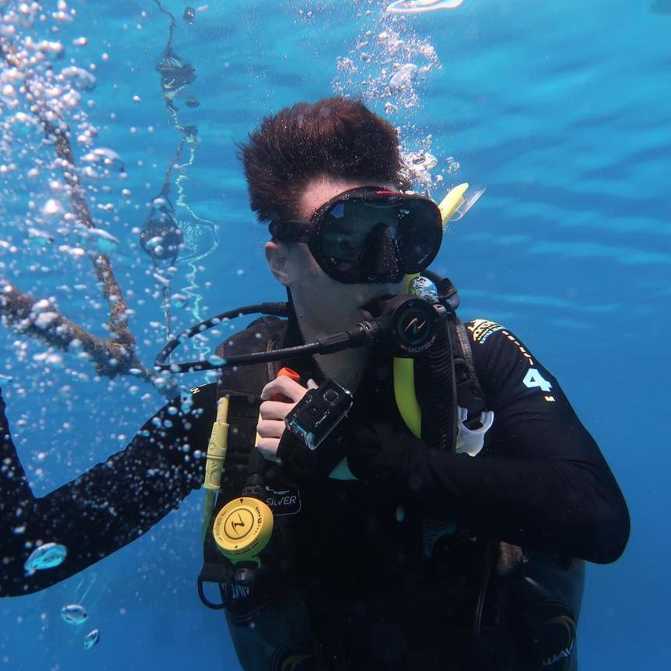

My name is Roman. I study computer science at California State University, Fullerton with a focus on artificial intelligence and algorithm engineering. In this portfolio you will find
the products of curiosity and creativity, and insight into each project along the way. Everything on this website is an object of my own creation (except this picture to the left).
Over the years, I have become increasingly fascinated with the prospect of artifical intelligence. Starting with small game projects in high school, I always had the most fun programming
enemies or allies that acted and made decisions independent of player control. As technology progressed and I was exposed to things like machine learning and Amazon Alexa, it became increasingly
clear that AI was the exciting future. I have barely scratched the surface of the existing technologies, which barely scratch the surface of true AI potential, but you will find my endeavours here
nonetheless.
On top of my AI projects, I will try and keep the other pages updated with any games I create, as well as the photography and videography projects I (very) rarely finish. I will also try and
upload some older projects I have, although that is more for nostalgia purposes and a comparison for personal progress.
Enjoy!